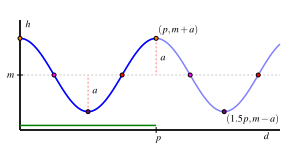

¿Cómo un punto que recorre un círculo genera naturalmente una función?
¿Cuáles son algunas propiedades importantes que caracterizan una función generada por un punto que recorre un círculo?
¿Cómo cambia una función circular de maneras que son diferentes de las funciones lineales y cuadráticas?
Ciertos fenómenos que ocurren naturalmente eventualmente se repiten, especialmente cuando el fenómeno está de alguna manera conectado a un círculo. Por ejemplo, supón que estás en una rueda de la fortuna y consideramos tu altura, \(h\text{,}\) sobre el suelo y cómo tu altura cambia en conjunto con la distancia, \(d\text{,}\) que has recorrido alrededor de la rueda. En Figura 2.1.1 vemos una instantánea de esta situación, que está disponible como una animación completa 1
Usado con permiso de Illuminations por el National Council of Teachers of Mathematics. Todos los derechos reservados.
Figure2.1.1.A snapshot of the motion of a cab moving around a ferris wheel. Reprinted with permission from Illuminations by the National Council of Teachers of Mathematics. All rights reserved.
Dado que tenemos dos cantidades cambiando en conjunto, es natural preguntarse si es posible representar una como una función de la otra.
Preview Activity2.1.1.
En el contexto de la rueda de la fortuna mostrada en Figura 2.1.1, asume que la altura, \(h\text{,}\) del punto en movimiento (la cabina en la que estás) y la distancia, \(d\text{,}\) que el punto ha recorrido alrededor de la circunferencia de la rueda de la fortuna se miden en metros.
Además, asume que la circunferencia de la rueda de la fortuna es de \(150\) metros. Además, supón que después de subirte a tu cabina en el punto más bajo de la rueda, recorres el círculo completo varias veces.
Recuerda que la circunferencia, \(C\text{,}\) de un círculo está conectada al radio del círculo, \(r\text{,}\) por la fórmula \(C = 2\pi r\text{.}\) ¿Cuál es el radio de la rueda de la fortuna? ¿Qué tan alto es el punto más alto de la rueda de la fortuna?
¿Qué tan alta está la cabina después de haber recorrido \(1/4\) de la circunferencia del círculo?
¿Cuánta distancia a lo largo del círculo ha recorrido la cabina en el momento en que alcanza por primera vez una altura de \(\frac{150}{\pi} \approx 47.75\) metros?
¿Se puede pensar en \(h\) como una función de \(d\text{?}\) ¿Por qué o por qué no?
¿Se puede pensar en \(d\) como una función de \(h\text{?}\) ¿Por qué o por qué no?
¿Por qué crees que la curva mostrada a la derecha en Figura 2.1.1 tiene la forma que tiene? Escribe varias oraciones para explicar.
Subsection2.1.1Funciones Circulares
El fenómeno natural de un punto moviéndose alrededor de un círculo lleva a relaciones interesantes. Para facilitar la aritmética, consideremos un punto que recorre un círculo de circunferencia \(24\) y examinemos cómo cambia la altura del punto, \(h\text{,}\) a medida que cambia la distancia recorrida, \(d\text{.}\) Nota particularmente que cada vez que el punto recorre \(\frac{1}{8}\) de la circunferencia del círculo, viaja una distancia de \(24 \cdot \frac{1}{8} = 3\) unidades, como se ve en Figura 2.1.2 donde cada punto señalado se encuentra \(3\) unidades adicionales a lo largo del círculo más allá del anterior.
Figure2.1.2.Un punto recorriendo un círculo con circunferencia \(C = 24\text{.}\)
Nota que conocemos las alturas exactas de ciertos puntos. Dado que el círculo tiene una circunferencia \(C = 24\text{,}\) sabemos que \(24 = 2\pi r\) y por lo tanto \(r = \frac{12}{\pi} \approx 3.82\text{.}\) Por lo tanto, el punto donde \(d = 6\) (ubicado a \(1/4\) del camino a lo largo del círculo) está a una altura de \(h = \frac{12}{\pi} \approx 3.82\text{.}\) Duplicando este valor, el punto donde \(d = 12\) tiene una altura de \(h = \frac{24}{\pi} \approx 7.64\text{.}\) Otras alturas, como las que corresponden a \(d = 3\) y \(d = 15\) (identificadas en la figura por los segmentos de línea verde) no son obvias a partir del radio del círculo, pero se pueden estimar a partir de la cuadrícula en Figura 2.1.2 como \(h \approx 1.1\) (para \(d = 3\)) y \(h \approx 6.5\) (para \(d = 15\)). Usando todas estas observaciones junto con la simetría del círculo, podemos determinar las otras entradas en Tabla 2.1.3.
Table2.1.3.Datos para la altura, \(h\text{,}\) como una función de la distancia recorrida, \(d\text{.}\)
\(d\)
\(0\)
\(3\)
\(6\)
\(9\)
\(12\)
\(15\)
\(18\)
\(21\)
\(24\)
\(h\)
\(0\)
\(1.1\)
\(3.82\)
\(6.5\)
\(7.64\)
\(6.5\)
\(3.82\)
\(1.1\)
\(0\)
Además, si ahora dejamos que el punto continúe recorriendo el círculo, observamos que los valores de \(d\) aumentarán en consecuencia, pero los valores de \(h\) se repetirán según el patrón ya establecido, resultando en los datos en Tabla 2.1.4.
Table2.1.4.Datos adicionales para la altura, \(h\text{,}\) como una función de la distancia recorrida, \(d\text{.}\)
\(d\)
\(24\)
\(27\)
\(30\)
\(33\)
\(36\)
\(39\)
\(42\)
\(45\)
\(48\)
\(h\)
\(0\)
\(1.1\)
\(3.82\)
\(6.5\)
\(7.64\)
\(6.5\)
\(3.82\)
\(1.1\)
\(0\)
Es evidente que cada punto en el círculo corresponde a una y solo una altura, y por lo tanto podemos ver la altura de un punto como una función de la distancia que el punto ha recorrido alrededor del círculo, digamos \(h = f(d)\text{.}\) Usando los datos de las dos tablas y conectando los puntos de una manera intuitiva, obtenemos el gráfico mostrado en Figura 2.1.5.
Figure2.1.5.La altura, \(h\text{,}\) de un punto recorriendo un círculo de circunferencia \(24\) como una función de la distancia, \(d\text{,}\) recorrida alrededor del círculo.
La función \(h = f(d)\) de la que hemos estado hablando es un ejemplo de lo que llamaremos una función circular. De hecho, es evidente que si
tomamos cualquier círculo en el plano,
elegimos una ubicación inicial para un punto en el círculo,
dejamos que el punto recorra el círculo continuamente,
y rastreamos la altura del punto a medida que recorre el círculo,
la altura del punto es una función de la distancia recorrida y el gráfico resultante tendrá la misma forma básica que la curva mostrada en Figura 2.1.5. También resulta que si rastreamos la ubicación de la coordenada \(x\) del punto en el círculo, la coordenada \(x\) también es una función de la distancia recorrida y su curva tiene una forma similar al gráfico de la altura del punto (la coordenada \(y\)). Ambas funciones son funciones circulares porque son generadas por el movimiento alrededor de un círculo.
Activity2.1.2.
Considera el círculo representado en Figura 2.1.6 que está centrado en el punto \((2,2)\) y que tiene una circunferencia de \(8\text{.}\) Supón que rastreamos la coordenada \(y\) (es decir, la altura, \(h\)) de un punto que está recorriendo el círculo en sentido antihorario y que comienza en \(P_0\) como se muestra.
Figure2.1.6.Un punto recorriendo el círculo.
Figure2.1.7.Ejes para graficar \(h\) como una función de \(d\text{.}\)
¿Qué tan lejos está el punto \(P_1\) de \(P_0\) a lo largo del círculo? ¿Por qué?
Etiqueta los puntos subsecuentes en la figura como \(P_2\text{,}\)\(P_3\text{,}\)\(\ldots\) a medida que nos movemos en sentido antihorario alrededor del círculo. ¿Cuál es la coordenada \(y\) exacta del punto \(P_2\text{?}\) ¿y del \(P_4\text{?}\) ¿Por qué?
Determina las coordenadas \(y\) de los puntos restantes en el círculo (exactamente donde sea posible, de lo contrario aproximadamente) y completa las entradas en Tabla 2.1.8 que rastrean la altura, \(h\text{,}\) del punto que recorre el círculo como una función de la distancia recorrida, \(d\text{.}\) Nota que los valores de \(d\) en la tabla corresponden al punto recorriendo el círculo más de una vez.
Table2.1.8.Data for \(h\) as a function of \(d\text{.}\)
\(d\)
\(0\)
\(1\)
\(2\)
\(3\)
\(4\)
\(5\)
\(6\)
\(7\)
\(8\)
\(9\)
\(10\)
\(11\)
\(12\)
\(13\)
\(14\)
\(15\)
\(16\)
\(h\)
\(2\)
\(\)
\(\)
\(\)
\(\)
\(\)
\(\)
\(\)
\(\)
\(\)
\(\)
\(\)
\(\)
\(\)
\(\)
\(\)
\(\)
Al graficar los puntos en Tabla 2.1.8 y conectarlos de una manera intuitiva, dibuja un gráfico de \(h\) como una función de \(d\) en los ejes proporcionados en Figura 2.1.7 sobre el intervalo \(0 \le d \le 16\text{.}\) Etiqueta claramente la escala de tus ejes y las coordenadas de varios puntos importantes en la curva.
¿Qué es similar en tu gráfico en comparación con el de Figura 2.1.5? ¿Qué es diferente?
¿Cuál será el valor de \(h\) cuando \(d = 51\text{?}\) ¿Y cuando \(d = 102\text{?}\)
Subsection2.1.2Propiedades de las Funciones Circulares
Cada función circular tiene varias características importantes que están conectadas al círculo que define la función. Para la discusión que sigue, nos enfocamos en funciones circulares que resultan de rastrear la coordenada \(y\) de un punto que recorre en sentido antihorario un círculo de radio \(a\) centrado en el punto \((k,m)\text{.}\) Además, denotaremos la circunferencia del círculo con la letra \(p\text{.}\)
Figure2.1.9.Un punto recorriendo el círculo.
Figure2.1.10.Graficando \(h\) como una función de \(d\text{.}\)
Suponemos que el punto que recorre el círculo comienza en \(P\) en Figura 2.1.9. Su altura es inicialmente \(y = m + a\text{,}\) y luego su altura disminuye a \(y = m\) mientras recorremos hasta \(Q\text{.}\) Continuando, la altura del punto cae a \(y = m - a\) en \(R\text{,}\) y luego sube de nuevo a \(y = m\) en \(S\text{,}\) y eventualmente vuelve a subir a \(y = m+a\) en la parte superior del círculo. Si graficamos estas alturas continuamente como una función de la distancia, \(d\text{,}\) recorrida alrededor del círculo, obtenemos la curva mostrada a la derecha en Figura 2.1.10. Esta curva tiene varias características importantes para las cuales introducimos terminología importante.
La línea media de una función circular es la línea horizontal \(y = m\) para la cual la mitad de la curva se encuentra por encima de la línea y la otra mitad por debajo. Si la función circular resulta de rastrear la coordenada \(y\) de un punto que recorre un círculo, \(y = m\) corresponde a la coordenada \(y\) del centro del círculo. Además, la amplitud de una función circular es la desviación máxima de la curva desde la línea media. Nota particularmente que el valor de la amplitud, \(a\text{,}\) corresponde al radio del círculo que genera la curva.
Como podemos recorrer el círculo en cualquier dirección y tanto como queramos, el dominio de cualquier función circular es el conjunto de todos los números reales. A partir de nuestras observaciones sobre la línea media y la amplitud, se sigue que el rango de una función circular con línea media \(y = m\) y amplitud \(a\) es el intervalo \([m-a,m+a]\text{.}\)
Finalmente, introducimos la definición formal de una función periódica.
Definition2.1.11.
Sea \(f\) una función cuyo dominio y codominio son cada uno el conjunto de todos los números reales. Decimos que \(f\) es periódica siempre que exista un número real \(k\) tal que \(f(x+k) = f(x)\) para cada posible elección de \(x\text{.}\) El valor positivo más pequeño \(p\) para el cual \(f(x+p) = f(x)\) para cada elección de \(x\) se llama el período de \(f\text{.}\)
Para una función circular, el período es siempre la circunferencia del círculo que genera la curva. En Figura 2.1.10, vemos cómo la curva ha completado un ciclo completo de comportamiento cada \(p\) unidades, sin importar dónde comencemos en la curva.
Las funciones circulares surgen como modelos para fenómenos importantes en el mundo que nos rodea, como en un oscilador armónico. Considera una masa unida a un resorte donde la masa se encuentra en una superficie sin fricción. Después de poner la masa en movimiento estirando o comprimiendo el resorte, la masa oscilará indefinidamente de un lado a otro, y su distancia desde un punto fijo en la superficie resulta estar dada por una función circular.
Activity2.1.3.
Se coloca un peso sobre una mesa sin fricción junto a una pared y se le ata a un resorte que está fijo a la pared. Desde su posición natural de reposo, se le da al peso una velocidad inicial que lo pone en movimiento. El peso entonces oscila de un lado a otro, y podemos medir su distancia, \(h = f(t)\) (en pulgadas) de la pared en cualquier momento, \(t\) (en segundos). A continuación se muestra un gráfico de \(f\) y una tabla de valores seleccionados.
\(t\)
\(f(t)\)
\(0.25\)
\(6.087\)
\(0.5\)
\(4.464\)
\(0.75\)
\(3.381\)
\(1\)
\(3.000\)
\(1.25\)
\(3.381\)
\(1.5\)
\(4.464\)
\(1.75\)
\(6.087\)
\(2\)
\(8.000\)
\(t\)
\(f(t)\)
\(2.25\)
\(9.913\)
\(2.5\)
\(11.536\)
\(2.75\)
\(12.619\)
\(3\)
\(13.000\)
\(3.25\)
\(12.619\)
\(3.5\)
\(11.536\)
\(3.75\)
\(9.913\)
\(4\)
\(8.000\)
Determina el período \(p\text{,}\) la línea media \(y = m\text{,}\) y la amplitud \(a\) de la función \(f\text{.}\)
¿Cuál es la mayor distancia que el peso se desplaza de la pared? ¿Cuál es la menor distancia que el peso se desplaza de la pared? ¿Cuál es el rango de \(f\text{?}\)
Determina la tasa de cambio promedio de \(f\) en los intervalos \([4,4.25]\) y \([4.75,5]\text{.}\) Escribe una oración cuidadosa para explicar el significado de cada una (incluyendo unidades). Además, escribe una oración para comparar los dos valores diferentes que encuentres y lo que juntos dicen sobre el movimiento del peso.
Basado en la periodicidad de la función, ¿cuál es el valor de \(f(6.75)\text{?}\) ¿de \(f(11.25)\text{?}\)
Subsection2.1.3La tasa promedio de cambio de una función circular
Así como hay tendencias importantes en los valores de una función circular, también hay patrones interesantes en la tasa promedio de cambio de la función. Estos patrones están estrechamente ligados a la geometría del círculo.
Para la siguiente parte de nuestra discusión, consideramos un círculo de radio \(1\) centrado en \((0,0)\text{,}\) y consideramos un punto que recorre una distancia \(d\) en sentido antihorario alrededor del círculo con su punto de partida visto como \((1,0)\text{.}\) Usamos este círculo para generar la función circular \(h = f(d)\) que rastrea la altura del punto en el momento en que el punto ha recorrido \(d\) unidades alrededor del círculo desde \((1,0)\text{.}\) Consideremos la tasa promedio de cambio de \(f\) en varios intervalos que están conectados a ciertas fracciones de la circunferencia.
Recordando que \(h\) es una función de la distancia recorrida a lo largo del círculo, se sigue que la tasa promedio de cambio de \(h\) en cualquier intervalo de distancia entre dos puntos \(P\) y \(Q\) en el círculo se da por
\begin{equation*}
AV_{[P,Q]} = \frac{\text{change in height}}{\text{distance along the circle}}\text{,}
\end{equation*}
donde ambas cantidades se miden desde el punto \(P\) hasta el punto \(Q\text{.}\)
Primero, en Figure 2.1.12, consideramos los puntos \(P\text{,}\)\(Q\) y \(R\) donde \(Q\) resulta de recorrer \(1/8\) de la circunferencia desde \(P\text{,}\) y \(R\)\(1/8\) de la circunferencia desde \(Q\text{.}\) En particular, notamos que la distancia \(d_1\) a lo largo del círculo desde \(P\) hasta \(Q\) es la misma que la distancia \(d_2\) a lo largo del círculo desde \(Q\) hasta \(R\text{,}\) y por lo tanto \(d_1 = d_2\text{.}\) Al mismo tiempo, es evidente por la geometría del círculo que el cambio en altura \(h_1\) desde \(P\) hasta \(Q\) es mayor que el cambio en altura \(h_2\) desde \(Q\) hasta \(R\text{,}\) por lo que \(h_1 \gt h_2\text{.}\) Así, podemos decir que
Figure2.1.12.Comparando la tasa promedio de cambio sobre \(1/8\) de la circunferencia.
Figure2.1.13.Comparando la tasa promedio de cambio sobre \(1/20\) de la circunferencia.
Las diferencias en ciertas tasas promedio de cambio parecen volverse más extremas si consideramos arcos más cortos a lo largo del círculo. A continuación, consideramos recorrer \(1/20\) de la circunferencia a lo largo del círculo. En Figure 2.1.13, los puntos \(P\) y \(Q\) están separados por \(1/20\) de la circunferencia, al igual que \(R\) y \(S\text{,}\) por lo que aquí \(d_1 = d_5\text{.}\) En esta situación, es el caso que \(h_1 \gt h_5\) por las mismas razones que antes, pero podemos decir aún más. Desde el triángulo verde en Figure 2.1.13, vemos que \(h_1 \approx d_1\) (mientras que \(h_1 \lt d_1\)), por lo que \(AV_{[P,Q]} = \frac{h_1}{d_1} \approx 1\text{.}\) Al mismo tiempo, en el triángulo magenta en la figura vemos que \(h_5\) es muy pequeño, especialmente en comparación con \(d_5\text{,}\) y por lo tanto \(AV_{[R,S]} = \frac{h_5}{d_5} \approx 0\text{.}\) Por lo tanto, en Figure 2.1.13,
Esta información nos dice que una función circular parece cambiar más rápidamente para puntos cercanos a su línea media y cambiar más lentamente para puntos cercanos a sus valores más altos y más bajos.
Podemos estudiar la tasa promedio de cambio no solo en el círculo mismo, sino también en un gráfico como en Figure 2.1.10, y así sacar conclusiones sobre dónde la función está aumentando, disminuyendo, cóncava hacia arriba y cóncava hacia abajo.
Activity2.1.4.
Considera el mismo escenario que Activity 2.1.3: un peso oscila de un lado a otro en una mesa sin fricción con la distancia desde la pared dada por, \(h = f(t)\) (en pulgadas) en cualquier momento, \(t\) (en segundos). Se proporciona un gráfico de \(f\) y una tabla de valores seleccionados a continuación.
\(t\)
\(f(t)\)
\(0.25\)
\(6.087\)
\(0.5\)
\(4.464\)
\(0.75\)
\(3.381\)
\(1\)
\(3.000\)
\(1.25\)
\(3.381\)
\(1.5\)
\(4.464\)
\(1.75\)
\(6.087\)
\(2\)
\(8.000\)
\(t\)
\(f(t)\)
\(2.25\)
\(9.913\)
\(2.5\)
\(11.536\)
\(2.75\)
\(12.619\)
\(3\)
\(13.000\)
\(3.25\)
\(12.619\)
\(3.5\)
\(11.536\)
\(3.75\)
\(9.913\)
\(4\)
\(8.000\)
Determina \(AV_{[2,2.25]}\text{,}\)\(AV_{[2.25,2.5]}\text{,}\)\(AV_{[2.5,2.75]}\text{,}\) y \(AV_{[2.75,3]}\text{.}\) ¿Qué nos dicen estos cuatro valores sobre cómo se está moviendo el peso en el intervalo \([2,3]\text{?}\)
Da un ejemplo de un intervalo de longitud \(0.25\) unidades en el que \(f\) tenga su tasa de cambio promedio más negativa. Justifica tu elección.
Da un ejemplo del intervalo más largo que puedas encontrar en el que \(f\) esté disminuyendo.
Da un ejemplo de un intervalo en el que \(f\) sea cóncava hacia arriba. 3
Recuerda que una función es cóncava hacia arriba en un intervalo siempre que a lo largo del intervalo, la curva se doble hacia arriba, similar a una parábola que se abre hacia arriba.
En un intervalo donde \(f\) esté disminuyendo y sea cóncava hacia abajo, ¿qué nos dice esto sobre cómo se está moviendo el peso en ese intervalo? Por ejemplo, ¿el peso se está moviendo hacia o lejos de la pared? ¿está acelerando o desacelerando?
¿Qué conclusiones generales puedes hacer sobre la tasa de cambio promedio de una función circular en intervalos cercanos a sus puntos más altos o más bajos? ¿sobre su tasa de cambio promedio en intervalos cercanos a la línea media de la función?
Subsection2.1.4Resumen
Cuando un punto recorre un círculo, se puede generar una función correspondiente rastreando la altura del punto a medida que se mueve alrededor del círculo, donde la altura se ve como una función de la distancia recorrida alrededor del círculo. Llamamos a tal función una función circular. Una imagen que muestra cómo se genera el gráfico de una función circular a partir del círculo se puede ver en Figure 2.1.10.
Las funciones circulares tienen varias características estándar. La función tiene una línea media que es la línea para la cual la mitad de los puntos en la curva están por encima de la línea y la otra mitad de los puntos están por debajo. La amplitud de una función circular es la desviación máxima del valor de la función desde la línea media; la amplitud corresponde al radio del círculo que genera la función. Las funciones circulares también se repiten, y llamamos período de la función al valor más pequeño de \(p\) para el cual \(f(x+p) = f(x)\) para todo \(x\text{.}\) El período de una función circular corresponde a la circunferencia del círculo que genera la función.
Las funciones lineales no constantes son siempre crecientes o siempre decrecientes; las funciones cuadráticas son siempre cóncavas hacia arriba o siempre cóncavas hacia abajo. Las funciones circulares a veces son crecientes y a veces decrecientes, además de a veces cóncavas hacia arriba y a veces cóncavas hacia abajo. Estos comportamientos están estrechamente relacionados con la geometría del círculo.
Exercises2.1.5Exercises
1.
Considera el círculo representado en Figura 2.1.14 que está centrado en el punto \((2,2)\) y que tiene una circunferencia de \(8\text{.}\) Supón que seguimos la coordenada \(x\) (es decir, la ubicación horizontal, que llamaremos \(k\)) de un punto que recorre el círculo en sentido antihorario y que comienza en \(P_0\) como se muestra.
Figure2.1.14.Un punto recorriendo el círculo.
Figure2.1.15.Ejes para graficar \(k\) como una función de \(d\text{.}\)
Recuerda que en Actividad 2.1.2 identificamos las coordenadas verticales exactas y aproximadas de todos los \(8\) puntos señalados en el círculo. Además, recuerda que el radio del círculo es \(r = \frac{8}{2\pi} \approx 1.2732\text{.}\)
¿Cuál es la coordenada horizontal exacta de \(P_0\text{?}\) ¿Por qué?
Completa las entradas en Tabla 2.1.16 que siguen la ubicación horizontal, \(k\text{,}\) del punto que recorre el círculo como una función de la distancia recorrida, \(d\text{.}\)
Table2.1.16.Datos para \(k\) como una función de \(d\text{.}\)
\(d\)
\(0\)
\(1\)
\(2\)
\(3\)
\(4\)
\(5\)
\(6\)
\(7\)
\(8\)
\(9\)
\(10\)
\(11\)
\(12\)
\(13\)
\(14\)
\(15\)
\(16\)
\(k\)
\(0.73\)
\(\)
\(\)
\(\)
\(\)
\(\)
\(\)
\(\)
\(\)
\(\)
\(\)
\(\)
\(\)
\(\)
\(\)
\(\)
Al graficar los puntos en Tabla 2.1.16 y conectarlos de una manera intuitiva, dibuja un gráfico de \(k\) como una función de \(d\) en los ejes proporcionados en Figura 2.1.15 sobre el intervalo \(0 \le d \le 16\text{.}\) Etiqueta claramente la escala de tus ejes y las coordenadas de varios puntos importantes en la curva.
¿Qué es similar en tu gráfico en comparación con el de Figura 2.1.7? ¿Qué es diferente?
¿Cuál será el valor de \(k\) cuando \(d = 51\text{?}\) ¿Y cuando \(d = 102\text{?}\)
2.
Dos funciones circulares, \(f\) y \(g\text{,}\) se generan siguiendo la coordenada \(y\) de un punto que recorre dos círculos diferentes. Los gráficos resultantes se muestran en Figura 2.1.17 y Figura 2.1.18. Suponiendo que la escala horizontal coincide con la escala vertical, responde las siguientes preguntas para cada una de las funciones \(f\) y \(g\text{.}\)
Figure2.1.17.Un gráfico de la función circular \(f\text{.}\)
Figure2.1.18.Un gráfico de la función circular \(g\text{.}\)
Supón que el círculo utilizado para generar la función circular está centrado en el punto \((0,m)\) y tiene un radio \(r\text{.}\) ¿Cuáles son los valores numéricos de \(m\) y \(r\text{?}\) ¿Por qué?
¿Cuáles son las coordenadas de la ubicación en el círculo en la que el punto comienza su recorrido? Dicho de otra manera, ¿qué punto en el círculo corresponde a \(t = 0\) en el gráfico de la función?
¿Cuál es el período de la función? ¿Cómo se conecta esto con el círculo y con la escala en los ejes horizontales en los que se grafica la función?
¿Cómo se vería el gráfico si el radio del círculo fuera \(1\) unidad más grande? ¿\(1\) unidad más pequeño?
3.
Una persona se sube a una rueda de la fortuna. Entra en uno de los carros en el punto más bajo posible de la rueda desde una plataforma a \(7\) pies del suelo. Cuando está en la parte más alta de la rueda, está a \(92\) pies del suelo. Deja que \(h\) represente la altura del carro (en pies) y \(d\) (en pies) la distancia que el carro ha recorrido a lo largo de la circunferencia de la rueda desde su ubicación inicial en la parte inferior de la rueda. Usaremos la notación \(h = f(d)\) para cómo la altura es una función de la distancia recorrida.
¿A qué altura sobre el suelo está el centro de la rueda de la fortuna?
¿Qué distancia recorre el carro en un viaje completo alrededor de la rueda?
Para la función circular \(h = f(d)\text{,}\) ¿cuál es su amplitud? ¿línea media? ¿período?
Dibuja un gráfico preciso de \(h\) a lo largo de al menos dos períodos completos. Etiqueta claramente la escala en los ejes horizontal y vertical junto con varios puntos importantes.